Capítulo 14. Adaptação arquitetônica
Poucas aplicações são projetadas, construídas, usadas e, por fim, descartadas sem passar por mudanças. A mudança é endêmica ao software: tanto a maleabilidade percebida quanto a real do meio, aliada à facilidade de alterar código, induz todos os envolvidos com um aplicativo a iniciar mudanças. Os usuários mudam de ideia sobre o que querem e, portanto, o que exigem de um aplicativo. Designers buscam melhorar seus designs em termos de desempenho, aparência ou alguma outra característica. O ambiente de uso da aplicação pode mudar. Seja qual for o motivo, os desenvolvedores de software enfrentam os desafios de lidar com a necessidade de modificar um aplicativo. Agrupamos todos esses tipos de mudanças sob o termo adaptação: modificação de um sistema de software para atender a novos requisitos e circunstâncias em mudança.
A adaptabilidade foi introduzida emCapítulo 12como uma das várias propriedades não funcionais para as quais arquitetos frequentemente precisam projetar. Foram apresentadas várias técnicas arquitetônicas básicas que apoiam a adaptação. Assim comoCapítulo 13foi dedicado à exploração aprofundada das propriedades não funcionais da segurança e da confiança, então este capítulo aprofunda a adaptabilidade. No entanto, este capítulo não aspira a apresentar técnicas para lidar com todos os tipos possíveis de adaptação em todos os níveis de granularidade e abstração — para isso seria necessário um livro próprio. Em consonância com o foco do livro, nossa discussão está centrada em facilitar mudanças no contexto das arquiteturas de software: focamos na adaptação às principais decisões de design de um sistema — sua arquitetura — e em mudanças que surgem de uma base arquitetônica sólida. Consideramos processos para promover mudanças que são conceituados em termos da arquitetura do sistema e mostramos o valor e o papel dos modelos arquitetônicos explícitos no suporte e efetivo da adaptação. Também consideramos um dos tipos de mudança mais difíceis: modificar aplicações em tempo real, mostrando como isso pode ser alcançado usando uma abordagem centrada em arquitetura e conectores.
Os objetivos do capítulo são:
Este capítulo revela o poder particular dos conectores em apoiar a adaptação, especialmente em situações em que os conectores permanecem entidades de primeira classe na implementação e onde a comunicação é baseada em eventos. Aplicações altamente dinâmicas são possíveis nessas situações e oferecem a oportunidade de criar aplicações novas, flexíveis e altamente adaptáveis.
Resumo deCapítulo 14
CONCEITOS DE ADAPTAÇÃO CENTRADA NA ARQUITETURA
Fontes e Motivações para a Mudança
Várias motivações para a mudança são familiares aos desenvolvedores. Talvez a mais comum seja a mudança corretiva, quando a aplicação é adaptada para atender aos requisitos existentes. Em outras palavras, mudança corretiva significa alinhar a arquitetura descritiva com a arquitetura prescritiva. Simplificando, correção de bugs. Se a correção de bugs é fácil ou altamente disruptiva, no entanto, pode depender da causa raiz do erro: o problema observado com a aplicação resultou de um pequeno erro localizado no código, ou resultou de um erro profundo cometido no mais alto nível da estrutura do sistema? Compreender a causa raiz é essencial para determinar como efetuar a correção; Tentar corrigir um problema profundo com mudanças localizadas geralmente não é eficaz.
Uma segunda motivação comum para a mudança é a modificação dos requisitos funcionais de um sistema — novas funcionalidades são necessárias, as existentes modificadas, talvez algumas precisem ser removidas. Em vez de pensar que a existência de tais necessidades de mudança reflete um processo inadequado de planejamento ou análise do sistema, os pedidos de mudança funcional geralmente partem do sucesso com a aplicação existente. Uma vez que os aplicativos estão em uso, eles inspiram os usuários a pensar em sua tarefa de novas maneiras, levando a novas ideias sobre o que pode ser realizado. Aplicações em uso podem alterar o contexto de uso, ou o contexto de uso pode mudar por razões extrínsecas. Qualquer que seja a fonte, as solicitações de alteração de recursos normalmente representam mudanças na arquitetura da aplicação.
Uma terceira motivação para a mudança é a exigência de satisfazerNovas ou alteradas propriedades do sistema não funcional. Tais propriedades incluem segurança, desempenho, escala e assim por diante, conforme discutido emCapítulos 12e13. Novas propriedades não funcionais podem induzir mudanças profundas na arquitetura de um sistema. Um exemplo é a World Wide Web. Antes de 1994, o protocolo que governava a Web era HTTP/1.0, um protocolo ponto a ponto sem providência para proxies ou cache oculto. A mudança para o HTTP/1.1 foi realizada pela adoção de um novo estilo arquitetônico para a Web (ou seja, REST), permitindo que a Web escalasse de milhares de servidores e dezenas de milhares de clientes para muitos milhões de cada. Da mesma forma, à medida que os ataques de segurança ao servidor web IIS da Microsoft aumentavam, uma reformulação significativa foi necessária para enfrentar as novas ameaças. Outra propriedade não funcional que pode causar mudanças arquitetônicas significativas é a "melhor organização" — reestruturar uma aplicação emantecipaçãode pedidos de mudança futura. Por exemplo, uma nova plataforma de middleware (ou seja, tecnologia de conectores) pode ser implementada como um passo proativo para apoiar possíveis modificações futuras.
Uma quarta motivação comum para a adaptação do sistema é a necessidade de se conformar a um ambiente operacional transformado. Nessa situação, nem as funções da aplicação nem suas propriedades não funcionais são alteradas, mas a estrutura da aplicação deve ser adaptada para rodar, por exemplo, em hardware novo ou para acomodar mudanças nas interfaces com sistemas externos.
Mais obviamente pertinentes para o arquiteto de software são as motivações para mudanças que surgem das forças da linha de produto. Estritamente falando, tais mudanças podem ser classificadas em um dos tipos anteriores, mas tal classificação obscureceria os insights.
A primeira dessas motivações da linha de produtos é o desejo de criar uma nova variante dentro de uma linha de produtos. A noção aqui é que os arquitetos já identificaram previamente um ponto de ramificação dentro de uma arquitetura de linha de produto e, nesse ponto de ramificação, uma nova variante é identificada. Por exemplo, em eletrônicos de consumo, um ponto ramificado dentro do projeto para sistemas de televisão integrados é a interface para um subsistema de armazenamento/reprodução de alta capacidade — um disco rígido, um gravador/player de DVD ou um sistema de fita, talvez. Se se tornar desejável interagir com uma tecnologia diferente, talvez Blu-ray, uma nova variante nesse ponto de ramificação é criada. No nosso exemplo de longa data do jogo Lunar Lander, uma nova variante pode ser baseada no desejo de utilizar um novo joystick sem fio para controlar o módulo de pouso ou de incorporar um novo motor gráfico tridimensional com desempenho melhorado.
Outra das motivações da linha de produtos é a criação de um novo ponto de ramificação, identificando assim uma nova oportunidade para segmentação no mercado de produtos. Por exemplo, um fabricante de eletrônicos pode decidir adaptar o design de seus produtos de televisão para permitir que funcionem com sistemas de segurança residencial, talvez usando tecnologia picture-in-picture para permitir a exibição contínua dos dados das câmeras de vigilância enquanto assiste TV aberta. A existência de muitos tipos de sistemas de segurança externos implica muitas variantes possíveis dentro desse ponto de ramificação; Outras variantes são sugeridas pelas diversas formas de integrar informações de vigilância ao ambiente de exibição de televisão. Novos pontos de desvio no design do Lunar Lander podem focar em ambientes multiplayer ou na extensibilidade para permitir missões a outros objetos do sistema solar.
Outra motivação de linha de produto vem do desejo de fundir (sub)linhas de produto, racionalizando assim suas arquiteturas. Um esforço bem-sucedido desse tipo gerará uma arquitetura de linha de produto comum sem exigir a criação completa de uma nova arquitetura. O objetivo, aparentemente, é preservar o máximo possível das arquiteturas contribuintes.
Um tipo de adaptação que será discutida mais adiante neste capítulo é a adaptação improvisada. A dificuldade de apoiar essa mudança é tipicamente maior do que para adaptações não em tempo real, então algumas palavras são necessárias aqui para incentivá-la a considerar. Um exemplo simples, mas talvez extremo, que motiva esse tipo de mudança vem da exploração planetária. As espaçonaves Cassini/Huygens foram lançadas de Cabo Canaveral em outubro de 1997; eles só chegaram ao destino pretendido, Saturno, em julho de 2004. Durante o trânsito para Saturno, os sistemas de software a bordo foram atualizados várias vezes. Como diz o site da Cassini (Laboratório de Propulsão a Jato da NASA), "Esta fase de desenvolvimento nunca será realmente concluída, já que novas sequências de comando estão sendo continuamente criadas durante toda a operação da Cassini. Novos softwares de voo também serão desenvolvidos e carregados periodicamente a bordo da espaçonave, para operar no Subsistema de Dados de Comando, Subsistema de Controle de Atitude e Articulação, bem como nos instrumentos de ciência física a bordo." Como sistema, fica claro que o Cassini não podia ser parado e recarregado com o novo software; em sua vez, as atualizações precisavam ocorrer enquanto o sistema estivesse em operação contínua.
Atualizações de Software de Espaçonaves
A atualização do software da espaçonave enquanto estão em luz espacial é um caso extremo de adaptação em tempo real. As necessidades de atualização refletem muitas fontes, desde novas direções ou prioridades para uma missão baseadas em fenômenos recentemente descobertos até correções de bugs. Outra fonte é a pressão de tempo e a astrofísica: devido à orientação relativa dos planetas, pode ser essencial lançar uma missão de exploração em um período relativamente restrito. Se o software da missão não estiver pronto no momento do lançamento, uma estratégia viável é lançar com um sistema esquelético e depois atualizar enquanto a nave está a caminho do destino da missão.
Todos esses fatores surgiram na missão Cassini a Saturno. Nem é preciso dizer que as apostas são altas nas atualizações de software em voo, portanto uma estratégia de atualização muito conservadora e orientada a patches é aplicada. Alguns documentos estão disponíveis online que descrevem os processos envolvidos [como (Paczkowski e Roy 2004)].
Um exemplo mais prosaico é a extensão da funcionalidade do navegador web. Se, ao navegar na Web, encontrar um recurso que exige um novo tipo de software de exibição (como para um novo tipo de codificação de áudio, talvez), o navegador deve ser estendido. Se o navegador exigir que o usuário baixe a nova extensão, realize algumas etapas de instalação e então reinicie o navegador — ou pior ainda, o computador — antes de poder continuar, o usuário está em incômodo. Após reiniciar, o usuário terá que renavegar até o recurso que exigiu a extensão inicialmente. Uma estratégia mais agradável, do ponto de vista do usuário, é apoiar o download e a instalação do novo software (ou seja, a adaptação do navegador) dinamicamente, para que o usuário possa continuar o uso de forma ininterrupta.[18]
As motivações para apoiar mudanças online (dinâmicas) incluem, portanto:
Por fim, toda adaptação de software é motivada pela observação e análise. Embora talvez esse seja um ponto óbvio, o papel da observação e análise é fundamental no processo de apoio à adaptação de software, e será discutido mais adiante no capítulo. O comportamento e as propriedades do sistema existente são observados e comparados, por exemplo, com metas e objetivos do sistema, e na medida em que a análise revela uma discrepância, atividades de adaptação são iniciadas.
Camadas de cisalhamento
Antes de avançar na consideração da adaptação dos sistemas de software, vale a pena refletir sobre mudanças na arquitetura física e de edifícios. O livro perspicaz de Stewart Brand, Como Os Edifícios Aprendem — O Que Acontece Depois de Serem Construídos (Brand 1994), examina como, e por que, os edifícios mudam ao longo do tempo. Todos nós já passamos por esse processo, é claro: reorganizamos os móveis em nossos escritórios e casas, instalamos novos cabos para acomodar novos sistemas de áudio, instalamos novas janelas para remover correntes de ar e tornar o prédio mais eficiente em termos de energia. Em ocasiões raras, reformamos nossas casas, adicionando novos espaços ou reconfigurando espaços existentes. Em ocasiões muito raras, podemos até ver uma casa fisicamente movida — por exemplo, se for de importância histórica, mas estiver no caminho de um novo desenvolvimento cívico.
A marca categoriza os tipos de mudanças que podem ser feitas em um edifício em termos de "camadas de cisalhamento". Baseando-se em trabalhos anteriores de Frank Duffy, Brand cita seis camadas.
|
|
Local. Esse é o cenário geográfico, a localização urbana e o terreno legalmente definido, cujos limites e contexto sobrevivem a gerações de edifícios efêmeros. Estrutura. A fundação e os elementos de suporte são perigosos e caros de trocar, então as pessoas não mudam. Esses são os prédios. Pele. As superfícies externas agora mudam a cada vinte anos, mais ou menos, para acompanhar a moda ou a tecnologia, ou para reparos em grande escala. Serviços. Estes são os órgãos de funcionamento de um prédio: fiação de comunicação, fiação elétrica, encanamento, sistemas de sprinklers, ... Plano Espacial. O layout interno — onde vão paredes, tetos, pisos e portas. 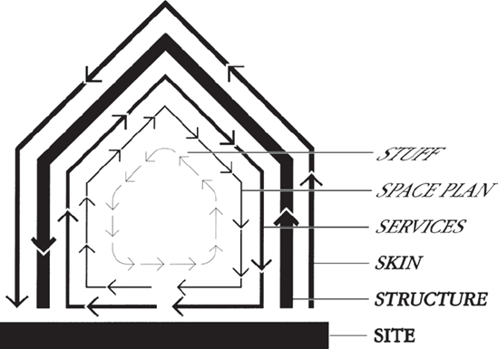 Figura 14-1. Cortando camadas de mudança [de How Buildings Learn, de Stewart Brand (Brand 1994)] Rechear. Cadeiras, mesas, telefones, quadros, eletrodomésticos, luminárias, escovas de cabelo; Todas aquelas coisas que oscilam diariamente ou mensalmente. |
|
|
|
--(Brand 1994) |
|
Essas seis camadas de cisalhamento estão ilustradas na Figura 14-1, com a disposição das camadas no diagrama correspondendo a onde, aproximadamente, as camadas aparecem em uma estrutura física.[19]
O software também é assim. Embora o software seja intrinsecamente mais maleável, as restrições e dependências que impomos durante o processo de design e implementação fazem com que ele se comporte de forma semelhante a um edifício. Como vimos, qualquer sistema de software possui uma arquitetura que determina seus elementos de suporte. Possui um local em sua instalação, ou seja, o contexto de uso, seja um negócio em casa, um laboratório de pesquisa ou um banco. Da mesma forma, o software tem uma "skin" em suas interfaces de usuário; Outras analogias podem ser encontradas para as outras camadas. O difícil sobre software, no entanto, é que não podemos examinar um sistema de software apenas olhando para o código-fonte e distinguir facilmente um dos elementos portadores do sistema de um mero incidental — um item tão incidental quanto a colocação de uma escova de cabelo em uma casa.
Um dos valores das observações de Brand é a categorização dos tipos de mudança de acordo com a natureza e o custo de fazer uma mudança dentro dessas dimensões. Em outras palavras, nosso entendimento das camadas de construção, seja como incorporadores sofisticados ou simplesmente como ocupantes, nos informa sobre o que pode ser mudado, com que rapidez e aproximadamente por qual custo. Por exemplo, como Brand observou, mudanças em um elemento portante de carga de um edifício — como uma viga de aço — simplesmente não são feitas; fazer isso provavelmente colocaria em risco a integridade estrutural do edifício. Se pudéssemos fazer uma categorização semelhante para software, que nos permitisse identificar de forma confiável os elementos que suportam a carga de uma aplicação, isso nos ajudaria a entender as técnicas necessárias para efetuar uma determinada mudança e nos permitiria estimar efetivamente o tempo e o custo para alcançar os objetivos. Nossa intuição para entender os custos, dificuldade e tempo para fazer mudanças em qualquer um desses aspectos de um edifício é bastante boa, devido ao menos em parte à nossa longa experiência com edifícios e sua natureza visível e material. Infelizmente, normalmente não temos esse tipo de intuição com software, pois muitas vezes não conseguimos associar um pedido de alteração a um tipo específico de camada no software.
Um dos objetivos da Brand ao identificar camadas de cisalhamento com suas diferentes propriedades é fornecer orientações de design. Reconhecendo que as camadas mudam em taxas diferentes, a mudança é facilitada limitando o acoplamento entre as partes de um edifício que correspondem a diferentes camadas de cisalhamento. (Um exemplo simples de advertência que vem disso é: "Não associe inextricavelmente a aparência de um edifício aos seus serviços" — uma advertência notoriamente contrariada pelo Centro Pompidou de Paris, como ilustrado em Figura 14-2. Ao tornar os serviços — como escadas rolantes — parte da pele, trocar um exige trocar o outro. Os custos de manutenção dos serviços agora também devem incluir custos para manter sua aparência pública.)
Essas noções de camada podem ser aplicadas a softwares. Em particular, a observação das camadas e a advertência para desacoplá-las é consistente com o ditado de David Parnas de que engenheiros de software devem "projetar para a mudança." O conceito de camada vai além dessa simples platitude, no entanto, para sugerir maneiras específicas de avaliar se uma conexão proposta entre dois elementos de um sistema é apropriada ou não. Os elementos propostos para conexão são em camadas separadas? Em camadas que estão amplamente separadas? A conexão proposta é algo que mantém os aspectos essenciais da independência para essas camadas?
Figura 14-2. The Pompidou Center: Uma boa lição sobre por que a aparência não deve estar intrinsecamente ligada aos serviços.
Na análise de Brand, a estrutura desempenha um papel um tanto distinto. Sua relativa imutabilidade na arquitetura de edifícios significa que deve ser bem compreendida, pois fornece os limites para os tipos de mudanças que podem ser aplicadas. No caso do software, com sua relativa mutabilidade, temos a oportunidade de acomodar uma grande variedade de mudanças — mas apenas sob certas condições. Podemos alcançar uma adaptação eficaz se tornarmos explícita a estrutura do software (isto é, a configuração arquitetônica do sistema de componentes e conectores) e fornecer formas de manipular essa estrutura. No mínimo, entender a arquitetura de um sistema de software nos permite avaliar o potencial para mudanças futuras.
Por fim, Brand faz uma observação contundente sobre arquiteturas de edifícios que fornece uma visão fundamental sobre a adaptação de software: "Devido às diferentes taxas de mudança de seus componentes, um edifício está sempre se destruindo." Como introduzido emCapítulo 3, uma preocupação com mudanças de software é a erosão arquitetônica, o desvio regressivo de uma aplicação em relação à arquitetura original decorrente de mudanças sucessivas. Se um programador modifica uma aplicação apenas com base no conhecimento local do código-fonte, pode ser bastante difícil determinar se as mudanças feitas atravessam as camadas de cisalhamento do software. Em outras palavras, as mudanças no código podem não respeitar as principais decisões de design que regem a aplicação. Na medida em que os limites são ignorados durante as alterações, a estrutura é degradada. A estratégia preventiva para evitar erosão arquitetônica desse tipo é basear as decisões de mudança não na análise local do código, mas na compreensão e modificação da arquitetura, e então fluir essas mudanças para o código relevante, um tema que exploramos a seguir.
Elementos estruturais sujeitos a mudanças
Qualquer elemento estrutural de um sistema, seus componentes, conectores e sua configuração, pode ser o foco da adaptação. As características particulares desses elementos, encontradas em um sistema específico, determinarão significativamente a dificuldade de acomodar mudanças e as técnicas úteis para alcançá-la.
Componentes
Algumas mudanças podem estar confinadas ao interior de um componente: sua interface com o mundo exterior permanece fixa, mas, talvez para alcançar uma propriedade não funcional particular, o interior do componente deve ser alterado. O desempenho de um componente pode ser melhorado, por exemplo, por uma mudança no algoritmo que ele utiliza internamente. Em muitos casos, entretanto, a adaptação para atender a propriedades funcionais modificadas envolve alterar a interface de um componente.
Além dessa dicotomia simples, um componente pode possuir capacidades que facilitam sua adaptação, ou seu papel na adaptação da arquitetura maior dentro da qual reside.
A primeira dessas capacidades é o conhecimento de si mesmo e a exposição desse conhecimento a entidades externas. Um componente pode ser construído de modo que suas próprias especificações sejam explícitas e incluídas dentro do componente. Uma forma direta e o uso dessas especificações são as asserções em tempo de execução que validam que os parâmetros recebidos satisfazem as suposições das quais o projeto do componente depende. Em um mundo verificado, estático (ou seja, não adaptativo), essa verificação de asserção em tempo de execução pode ser considerada um desperdício, mas em um mundo incerto e adaptativo, tal verificação pode ser um complemento útil para manter uma aplicação robusta. Um uso menos óbvio dessas afirmações é na coleta de informações que possam motivar adaptações. Asserções podem detectar repetidamente violação das suposições de entrada. Se um componente retém um histórico dessas violações e expõe esse histórico a um agente de monitoramento, essa informação pode guiar o arquiteto na identificação de maneiras pelas quais a arquitetura precisa ser alterada. De forma mais geral, um componente pode disponibilizar suas especificações completas para inspeção por entidades externas. Tal capacidade permite a seleção dinâmica dos componentes para alcançar os objetivos do sistema e, portanto, apoia fortemente a adaptação. Embora não seja suportado em todas as linguagens de programação, a reflexão de componentes é suportada em Java.
O segundo é o (auto)conhecimento do papel do componente na arquitetura maior. Por exemplo, um componente pode ser construído para monitorar o comportamento de outros componentes em uma arquitetura e alterar seu comportamento dependendo da falha de um componente externo. Um componente pode ser capaz de questionar se existem outros componentes em uma arquitetura que possam ser usados para obter um serviço equivalente. Da mesma forma, se um componente monitora seu próprio comportamento e percebe, por exemplo, que não está tendo desempenho rápido o suficiente para satisfazer seus componentes clientes, ele pode solicitar que um agente externo realize algum nivelamento de carga ou outra atividade corretiva.
O terceiro é a capacidade de engajar proativamente outros elementos de um sistema para se adaptar. Continuando o exemplo anterior, em vez de pedir a um agente externo que reduza a carga, um componente pode questionar se existem componentes externos (sub-) disponíveis que possam ser usados dentro do componente para permitir que ele melhore seu próprio desempenho. Embora tal cenário atualmente seja bastante improvável, tal capacidade é apenas uma progressão natural de componentes que não são autoconscientes e não refletivos, para componentes que são reflexivos mas passivos, para componentes que não só são reflexivos, mas (pro)ativos em apoiar a adaptação do sistema.
As capacidades listadas acima antecipam as técnicas gerais de adaptação discutidas mais adiante neste capítulo. O tema comum é o conhecimento explícito e a representação das especificações de um componente e o conhecimento de seu papel dentro da arquitetura mais ampla.
Interfaces de Componentes Mudanças nas interfaces de componentes são frequentemente inevitáveis ao modificar funcionalidades. Alterar a interface de um componente, no entanto, também requer alterações nos clientes da interface: os parâmetros de entrada e saída devem coincidir em ambas as extremidades da interação. Muitos componentes do cliente podem não estar "interessados" na nova funcionalidade representada pela nova interface, mas ainda assim precisam ser modificados.
Esse efeito cascata indesejável da mudança motivou a criação de técnicas para mitigar tais impactos. Uma técnica popular é a criação de adaptadores, em que os componentes que desejam usar a interface original invocam um componente adaptador, que então repassa a chamada para a nova interface, conforme ilustrado na Figura 14-3. Um cliente que precisa da nova interface chama diretamente o componente modificado.
O uso de uma técnica como essa claramente tem implicações arquitetônicas: novos componentes são introduzidos e o rastreamento das interações para entender o funcionamento do sistema torna-se mais complexo. Mudanças subsequentes em um dos métodos anteriormente não modificados tornam-se ainda mais complexas: Deveria ser introduzido mais um adaptador? O método deve ser alterado no componente raiz e em todos os adaptadores criados anteriormente? Basta dizer por enquanto que "correções locais" que tentam mitigar mudanças nas interfaces dos componentes podem ter sérias repercussões; O arquiteto é sensato em considerar, antecipadamente, uma série de técnicas para acomodar a mudança, conforme discutido mais adiante neste capítulo.
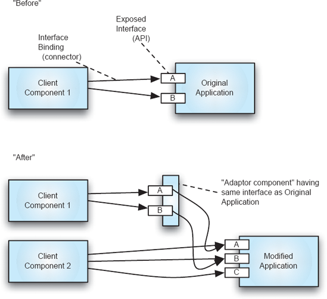
Figura 14-3. Uso de componentes adaptadores para preservar interfaces.
Conectores
Assim como componentes podem ser necessários para mudar, também os conectores podem ser necessários, e dependendo do tipo de mudança, as implicações arquitetônicas podem ser profundas ou desprezíveis, de forma semelhante para as mudanças resultantes na implementação. Tipicamente, a motivação para mudanças nos conectores é o desejo de alcançar propriedades não funcionais alteradas, como distribuição de componentes, maior independência das subarquiteturas diante de falhas potenciais, aumento do desempenho, entre outros.
Mudanças nos conectores podem ocorrer em qualquer uma das dimensões do projeto de conectores discutidas em detalhes emCapítulo 5. Como a parte final deste capítulo mostrará, a escolha do tipo de conector é um dos principais determinantes do esforço envolvido em apoiar a evolução arquitetônica. De forma geral, quanto mais potente o conector, mais fácil será a mudança arquitetônica. Conectores que permanecem explícitos no código de implementação e que suportam desacoplamento muito forte entre componentes (como aqueles conectores que suportam comunicação baseada em eventos) são superiores para suportar adaptação.
Configurações
Mudanças na configuração dos componentes e conectores — ou seja, como eles são organizados e conectados entre si — representam mudanças fundamentais na arquitetura de um sistema. Tais mudanças podem ocorrer em qualquer nível de abstração de projeto e podem ser motivadas pela necessidade de atender a novos requisitos funcionais ou de alcançar novas propriedades não funcionais. Por exemplo, uma mudança comum e em grande escala é passar de um modelo integrado de aplicação business-to-business para uma arquitetura aberta e orientada a serviços. A aplicação personalizada pode permitir que duas empresas se comuniquem e transacionem negócios de forma muito eficiente, mas uma transição para uma arquitetura aberta e orientada a serviços pode permitir que cada parte adicione novas funcionalidades com mais facilidade ou suporte interações com outros parceiros de negócios. Muitos dos componentes centrais podem permanecer inalterados, mas a forma como eles interagem entre si e os conectores pelos quais se comunicam podem ser profundamente alterados.
Suportar efetivamente tal modificação requer trabalhar a partir de um modelo explícito da arquitetura. Muitas dependências entre componentes existirão, e o modelo arquitetônico é a base para gerenciar e preservar tais relações. Mais importante ainda, as restrições que governaram a criação da arquitetura inicial devem ser mantidas para que a arquitetura mantenha o mesmo estilo. Se não for possível manter as restrições de estilo governantes, então uma análise deliberativa deve ser realizada para determinar um estilo apropriado para a nova aplicação. A transição de aplicações personalizadas e fortemente integradas de negócios para arquiteturas orientadas a serviços é justamente essa mudança: o estilo arquitetônico fundamental da aplicação foi alterado.
O modelo arquitetônico precisará gerenciar também características de implantação, como relações básicas componente-conector, em consonância com a discussão deCapítulo 10.
Agentes de Mudança e Contexto
As técnicas para promover mudanças são determinadas não apenas pelo que é finalmente alterado, mas também pelo contexto da mudança e pelo caráter do(s) agente(s) que a realizam. Aspectos importantes do contexto para a mudança incluem:
Os agentes para promover mudanças incluem tanto pessoas quanto softwares. Atributos importantes dos agentes de mudança incluem:
Cada um dos itens acima é considerado nos parágrafos seguintes.
Motivações, Observações e Análise
Vários tipos de motivação para a mudança foram discutidos anteriormente. Dependendo da motivação específica em ação, surgem diferentes problemas e oportunidades para lidar com a mudança. Todas as motivações surgem de uma combinação de observações sobre um sistema e análise dessas observações. Por exemplo, um sistema pode não executar alguma função recém-desejada (conforme determinado comparando seu comportamento atual com o comportamento recém-buscado), ou pode precisar ser corrigido (conforme determinado comparando seu comportamento atual com a especificação original). A questão chave é de onde vêm as observações sobre um sistema.
Algumas observações podem ser retiradas da revisão do engenheiro sobre a arquitetura do sistema. Mais provável é a situação em que um usuário, ou algum agente externo, observa o comportamento em tempo de execução da aplicação. Na medida em que essas observações estão ligadas ou relacionadas a informações sobre a arquitetura da aplicação, a tarefa de adaptação é facilitada. Se as únicas observações são aquelas que vêm ao observar o comportamento funcional externo de uma aplicação, então determinar a estrutura relacionada é uma tarefa semelhante à depuração: o comportamento ofensivo precisa ser (possivelmente laboriosamente) examinado para ver quais partes da aplicação são responsáveis. Se a aplicação tiver, ou puder ter, sondas projetadas para ajudar o analista a determinar quais elementos internos são relevantes, a adaptação pode avançar mais rapidamente. Todo programador iniciante está familiarizado com essa técnica em sua forma mais simples: a inclusão de dezenas de funções println, para indicar repetidamente onde o programa está sendo executado e os valores que as variáveis específicas possuem.
À medida que as arquiteturas se tornam mais complexas, a técnica de linha de impressão do programador iniciante torna-se inadequada. O conceito, porém, ainda é valioso. Monitores da arquitetura podem ser incluídos em um sistema (tipicamente nos conectores) para permitir um monitoramento de alta qualidade do comportamento. Quanto mais precisas as informações e a análise baseada nessas informações, melhor a mudança pode ser planejada e gerenciada. Em casos extremos, a ausência de uma boa técnica para identificar os componentes responsáveis por um determinado comportamento pode fazer com que o engenheiro substitua um subsistema inteiro. Com boas informações, porém, uma mudança muito mais localizada pode ser suficiente. Voltamos ao tema das sondas embutidas emSeção 14.3.1abaixo.
Timing
O posicionamento da mudança dentro do cronograma de um projeto afeta muito as técnicas disponíveis para acomodar a mudança. Resumindo, quanto antes, melhor. Em vez de apenas repetir o velho ditado de que corrigir problemas em requisitos é substancialmente mais barato do que corrigi-los no código, expandimos o prazo para incluir a implantação e o uso do sistema, pois de fato algumas aplicações podem precisar ser alteradas no local, em tempo real. Um gráfico nocional mostrando a relação entre custo e tempo é encontrado na Figura 14-4.
EmFigura 14-4, o aumento acentuado no custo está associado à acomodação de mudanças uma vez que um sistema é implantado; Os custos atingem o máximo quando um sistema implantado precisa ser alterado rapidamente. A implantação adiciona os custos de lidar com cada instalação individual de um sistema — possivelmente atrás de firewalls e personalizados no momento da instalação. Adaptação improvisada requer mecanismos e circunstâncias especiais, um tema que tratamos sozinho emSeção 14.3.3.
No entanto, acomodar mudanças no início da vida de um projeto não é a mesma coisa que corrigir problemas nos requisitos. A identificação, no início do projeto de um sistema, dos tipos de mudanças potenciais permite a inserção de mecanismos especificamente destinados a facilitar essas mudanças quando ocorrem posteriormente. Muito além de um banal "design interfaces para serem resilientes diante de possíveis e identificáveis mudanças no interior de um módulo", inúmeras técnicas sofisticadas projetadas para permitir ampla adaptação foram criadas. Esses incluem arquiteturas de plug-ins, linguagens de script e interfaces de eventos. Esses e outros serão descritos emSeção 14.3.2.
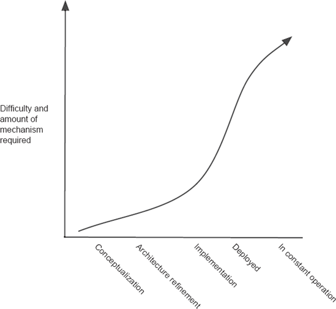
Figura 14-4. Relação nocional entre o momento da identificação de uma mudança e a dificuldade e mecanismo necessários para apoiar essa mudança.
Agentes de Mudança: Sua Identidade e Localização
Os processos que realizam a adaptação podem ser realizados por agentes humanos ou automatizados, ou uma combinação deles. Algumas compensações entre esses dois tipos de agentes são óbvias, como observar que os humanos podem lidar com uma gama muito maior de problemas e tipos de mudança ou que agentes automatizados podem agir com maior velocidade. Outros problemas podem não ser tão óbvios. Um valor particular dos agentes de mudança automatizados está no domínio dos sistemas implantados e operacionais contínuos. Se um agente de mudança de adaptação faz parte de uma aplicação implantada desde o início, existe potencial para um processo de adaptação eficaz: Chegar à aplicação implantada não é uma questão. Além disso, o agente pode ter acesso a informações contextuais, pelas quais detalhes de quaisquer modificações e personalizações locais estão disponíveis. Isso potencialmente permite que o agente de mudança aja de forma diferente em cada implantação individual. Usuários de sistemas operacionais modernos de desktop já conhecem esses agentes: periodicamente, um usuário é notificado quando uma atualização do sistema operacional ou de um aplicativo está disponível. Se o agente for minimamente sofisticado, as orientações dadas sobre as atualizações a serem realizadas serão baseadas no conhecimento de quaisquer otimizações locais. (Frequentemente, a atualização baixada realiza uma análise repetida ou suplementar, apresentando mensagens como "Localizando componentes instalados.")
No caso da adaptação dinâmica, a presença local de um agente de mudança automatizado é essencial. Gerenciar o estado da aplicação durante a atualização pode ser uma questão complicada, e é discutida especificamente mais adiante neste capítulo.
Conhecimento
O conhecimento possuído — ou não — pelo agente de mudança pode ser um determinante importante da estratégia de adaptação seguida. Por exemplo, pode haver incerteza em torno do novo comportamento ou em relação às novas propriedades que se acredita serem necessárias. Nesse caso, é necessária uma abordagem de adaptação que trabalhe deliberadamente para mitigar riscos. Isso pode envolver processos que permitem ao engenheiro recuar facilmente de uma mudança caso a mudança não seja satisfatória. Protótipos ou storyboards de possíveis mudanças são outras estratégias que podem ser empregadas quando houver incerteza.
Outro aspecto fundamental do conhecimento que governa a estratégia de adaptação é conhecer as restrições que devem ser mantidas no sistema modificado. Mais especificamente, uma adaptação deve ser realizada com pleno conhecimento do estilo arquitetônico da aplicação. Como o estilo é (tipicamente) um atributo intangível da arquitetura estrutural de um sistema, conhecê-lo e garantir que quaisquer alterações feitas sejam consistentes com ele exige trabalho extra por parte da equipe de adaptação. A penalidade por não conhecer e respeitar o estilo é a degradação arquitetônica. Essa penalidade pode não ter repercussões imediatas, mas ao longo das mudanças sucessivas as qualidades do sistema vão se degradar e a dificuldade de realizar novas mudanças aumenta, às vezes chegando ao ponto em que outras mudanças não podem ser feitas.
Outros aspectos importantes do conhecimento do sistema incluem algumas coisas óbvias. Se a arquitetura do sistema não for mantida, será necessária a recuperação arquitetônica. Se um componente do sistema for um binário adquirido, para o qual não há informações disponíveis sobre suas propriedades de adaptação (se houver), então serão necessárias grandes mudanças de granularidade ("transplantes de componentes"). Se não houver ferramentas de análise disponíveis para ajudar a avaliar as propriedades de uma mudança proposta, talvez uma abordagem mais iterativa para a adaptação devesse ser seguida. Quando se trata de adaptação, quanto mais conhecimento do sistema e da mudança, melhor.
Grau de Liberdade
O aspecto final do contexto da mudança é o grau de liberdade que o engenheiro tem ao projetar as mudanças. Pode-se pensar que maior liberdade é sempre melhor. Infelizmente, maior liberdade tem um custo significativo: o espaço de busca por soluções é maior, há menos orientação imediata para o engenheiro sobre como proceder, e avaliar todas as consequências e propriedades de uma possível mudança exigirá mais esforço. A suposição dessa afirmação, claro, é que o engenheiro está tentando fazer um trabalho de alta qualidade; O custo sempre pode ser mantido baixo no curto prazo simplesmente adotando qualquer esquema de adaptação que vier à mente e fazendo o trabalho da mesma forma ou estilo que o engenheiro sempre faz. O preço é pago no futuro, quando, por exemplo, se descobre que a mudança inibe o crescimento adicional ou degrada a qualidade arquitetônica do sistema. A abordagem alternativa é conhecer ou aprender as restrições da aplicação e trabalhar dentro dessas restrições para satisfazer as necessidades. Com essa abordagem, a coerência é mantida e as energias do engenheiro são direcionadas para soluções dentro do estilo arquitetônico atual.
Arquitetura: A Abstração Central
O conceito final de adaptação centrada na arquitetura é o central: o modelo arquitetônico. Uma arquitetura explícita é assumida em grande parte da discussão anterior. Na ausência de uma arquitetura explícita, o engenheiro fica para raciocinar sobre adaptação a partir da memória e do código-fonte — nenhum dos quais se mostrou muito eficaz na gestão de mudanças. A presença de uma arquitetura explícita fornece uma base suficiente para o planejamento e execução da adaptação do sistema. Como a arquitetura é o conjunto das principais decisões de design que regem o sistema, a adaptação baseada na arquitetura procede do conhecimento das coisas que são mais intrínsecas ao projeto do sistema.
A necessidade crítica, claro, é manter a integridade da arquitetura e sua representação explícita durante todo o processo de adaptação. Como discutido anteriormente, emCapítulos 2e9, o aspecto mais importante e mais difícil dessa tarefa é manter a consistência entre a arquitetura e a implementação. Desde que a implementação seja fiel à arquitetura, a arquitetura pode servir como o foco principal do raciocínio sobre possíveis adaptações. Assim que o modelo arquitetônico deixa de ser um guia confiável para o código, ele perde seu valor para orientar mudanças; O engenheiro fica apenas com o código—a "engenharia de software" dos anos 1970.
Note que, a propósito da discussão acima sobre a localização dos agentes de mudança, se o agente for uma parte automatizada de um sistema implantado, então, para que a arquitetura seja a abstração central que governa a adaptação, o modelo arquitetônico deve ser implantado com a aplicação ou a comunicação com uma referência externa deve ser possível. Se o modelo não estiver disponível, o agente não tem base para adaptação baseada em arquitetura.
A próxima seção coloca todos os conceitos discutidos acima em um arcabouço abrangente para adaptação baseada em arquitetura.
UM ARCABOUÇO CONCEITUAL PARA ADAPTAÇÃO ARQUITETÔNICA
O primeiro arcabouço conceitual abrangente para adaptação baseada na arquitetura foi apresentado em 1999 (Oreizy et al. 1999). O framework, mostrado na Figura 14-5, mostra as principais atividades e entidades e as principais relações entre elas. O diagrama é simples o suficiente para explicar como um processo de adaptação muito estático e baseado em requisitos procede, mas sofisticado o bastante para indicar como um processo de adaptação altamente dinâmico e automatizado pode funcionar. Citando o artigo de Peyman Oreizy e seus colegas,
A metade superior do diagrama, rotulada como "gestão
de adaptação", descreve o ciclo de vida dos sistemas de software
adaptativo. O ciclo de vida pode ter humanos no ciclo ou ser totalmente
autônomos. "Avaliar e monitorar observações" refere-se a todas as
formas de avaliar e observar a execução de uma aplicação, incluindo, no mínimo,
monitoramento de desempenho, inspeções de segurança e verificação de
restrições. "Mudanças de plano" refere-se à tarefa de aceitar as
avaliações, definir uma adaptação apropriada e construir um plano para executar
essa adaptação. "Deploy change descriptions" é a transmissão
coordenada de descrições de mudança, componentes e possivelmente novos
observadores ou avaliadores para a plataforma de implementação no campo. Por
outro lado, a implantação também pode extrair dados, e possivelmente
componentes, da aplicação em execução e levá-los para outro ponto para análise
e otimização.
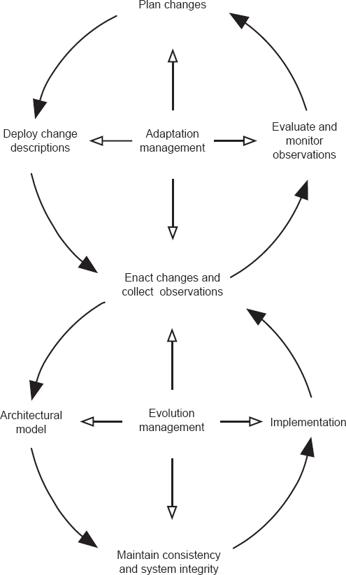
Figura 14-5. Arquitetura conceitual para adaptação.
De (Oreizy et al. 1999). © IEEE 1999.
A gestão da adaptação e a manutenção da consistência
desempenham papéis fundamentais em nossa abordagem. Embora mecanismos para
alteração de software em tempo de execução estejam disponíveis em sistemas
operacionais (por exemplo, bibliotecas de enlace dinâmico em Unix e Microsoft
Windows), modelos de objetos componentes e linguagens de programação, essas
funcionalidades compartilham uma grande limitação: elas não garantem a
consistência, correção ou outras propriedades desejadas da mudança em tempo de
execução. A gestão de mudanças é um aspecto crítico da evolução do sistema em
tempo de execução que identifica o que precisa ser alterado; fornece o contexto
para raciocinar, especificar e implementar mudanças; e os controles mudam para
preservar a integridade do sistema. Sem a gestão de mudanças, os riscos gerados
por modificações em tempo de execução podem superar aqueles associados ao
desligamento e reinício de um sistema. ...
A metade inferior do [diagrama], rotulada como
"gestão de evolução", foca nos mecanismos empregados para alterar o
software da aplicação. Nossa abordagem é baseada em arquitetura: as mudanças
são formuladas e raciocinadas sobre um modelo arquitetônico explícito que
reside na plataforma de implementação. Mudanças no modelo arquitetônico se
refletem em modificações na implementação da aplicação, garantindo que o modelo
e a implementação sejam consistentes entre si. Os serviços de monitoramento e
avaliação observam a aplicação e seu ambiente operacional, enviando informações
de volta para a metade superior do diagrama.
As figuras 14-6 apresentam uma estrutura ainda mais refinada. Em vez do rotulado arbitrariamente "gestão de adaptação" e "gestão da evolução" da Figura 14-5, essa figura separa as atividades em três tipos e mostra as entidades e agentes envolvidos na realização das atividades. Os insights essenciais do arcabouço anterior estão presentes, mas agora com detalhes e precisão adicionais.
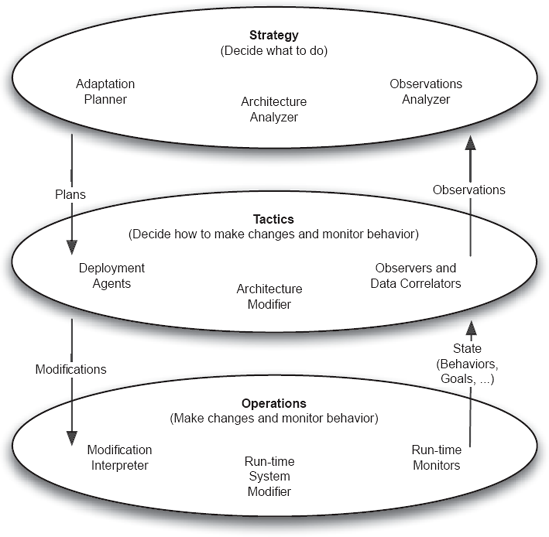
Figura 14-6. Atividades, agentes e entidades na adaptação baseada em arquitetura.
As três atividades são caracterizadas como estratégicas, táticas e operacionais. Estratégia refere-se a determinar o que fazer, táticas para desenvolver planos detalhados para alcançar as metas estratégicas, e operações aos detalhes práticos da execução desses planos.
Dentro da camada de atividade Estratégia estão agentes para analisar informações sobre o sistema e a arquitetura, e depois planejar adaptações com base nessa análise. Esses agentes podem simplesmente ser tarefas realizadas por um usuário humano, ou podem ser programas automatizados que realizam tais tarefas.
Dentro da camada de atividade Táticas existem agentes para realizar modificações arquitetônicas específicas baseadas nos planos recebidos da camada de estratégia e agentes de implantação para garantir que essas modificações sejam transmitidas a todas as instâncias implantadas da arquitetura a ser modificada. Também são encontrados aqui agentes para determinar como correlacionar informações brutas de monitoramento recebidas de instâncias implantadas do sistema, de modo que os dados coletados sejam adequados para análise no nível da estratégia.
Dentro da camada de atividade de Operações estão os mecanismos específicos para modificar os modelos de arquitetura (como os que podem residir em instâncias implantadas) e modificar a implementação, mantendo a consistência entre eles, além dos mecanismos para coleta de dados de uma instância em execução.
Lembre-se de que um dos propósitos de um framework como esse é fornecer ao engenheiro uma lista de verificação dos problemas. Nem todas as partes do framework serão igualmente úteis em todos os contextos de adaptação. Da mesma forma, a localização das várias entidades envolvidas (tanto os agentes que realizam as mudanças quanto as entidades analisadas ou sendo alteradas) pode variar. O modelo arquitetônico é um bom exemplo: qualquer agente que precise analisar ou modificar a arquitetura deve ter acesso a ele. Se a aplicação estiver embutida em um sistema isolado e autônomo, então todos os agentes necessários, assim como o modelo, devem estar presentes nesse sistema. Se, por outro lado, o sistema puder ser parado, recarregado e reiniciado, todos os agentes e modelos de adaptação podem ser encontrados (apenas) na estação de trabalho do engenheiro de desenvolvimento. A atividade de implantação pode envolver apenas o código objeto.
TÉCNICAS PARA APOIAR MUDANÇAS CENTRADAS NA ARQUITETURA
Nesta seção, apresentamos primeiro uma seleção de técnicas que podem ser usadas para apoiar as atividades do arcabouço conceitual apresentado acima, como observar o estado da aplicação e modificar a arquitetura. Como nem todas as arquiteturas ou estilos arquitetônicos são igualmente aptos a apoiar a adaptação, apresentamos então uma visão geral dos estilos — alguns mais arquitetônicos do que outros — que facilitam a mudança. A seção conclui com a discussão dos problemas especiais da mudança autônoma.
Técnicas Básicas Correspondentes às Atividades do
Arcabouço Conceitual
A adaptação é acionada quando alguém — usuário, desenvolvedor, auditor — determina que o comportamento atual de um sistema não é o desejado. Essa determinação é baseada na observação, a atividade fundamental.
Técnicas para Observar e Coletar o Estado
Determinar as técnicas mais úteis para observar e coletar informações de estado pressupõe saber o que é "estado". Em sua forma mais óbvia, estado consiste nos valores de tempo de execução dos objetos de um programa. Como os valores estão continuamente mudando, o estado é relativo ao tempo, e como apenas um pequeno subconjunto do estado de um programa provavelmente será útil na adaptação, o estado observado é utilmente uma sequência com carimbo temporal de um subconjunto dos valores de tempo de execução dos objetos do programa.
Outras informações além dos valores das variáveis de um programa também podem ser partes importantes do estado usadas para fins de adaptação. Por exemplo, propriedades do ambiente do programa que não são representadas podem ser essenciais para determinar como uma aplicação deve ser adaptada. Pode, por exemplo, que o comportamento de um sistema deva ser função de algum atributo atualmente não representado do ambiente externo. Um caixa eletrônico, por exemplo, talvez deva entrar em modo seguro e sinalizar um alarme sem fio sempre que o caixa eletrônico for submetido a forças G em qualquer direção (como pode ser causado por um terremoto — ou por alguém tentando fugir com a máquina). Adquirir essa noção aprimorada do estado de um programa exigiria monitorar mais do que apenas o próprio programa.
Um exemplo mais prosaico de informação externa que pode ser crítica para determinar uma estratégia de adaptação é a informação de implantação. O comportamento de um sistema pode ser impactado pela presença de certas opções específicas da plataforma — a presença de certos drivers de dispositivo, a quantidade de memória disponível ou a versão do sistema operacional, por exemplo. Essas informações geralmente são fáceis de coletar (por exemplo, de "registros" como o banco de dados de registros do MS Windows ou arquivos de biblioteca do Mac OS X) e podem ser essenciais na fase de análise.
As especificações do sistema e o modelo arquitetônico do sistema também podem ser aspectos do estado que precisam ser observados no sistema-alvo e levados ao contexto de análise. Pode-se esperar que essa informação seja estática e já conhecida pelo analista/planejador de adaptação, mas em alguns contextos isso pode não ser verdade. Por exemplo, se uma aplicação for altamente configurável, cada instância em execução pode ser única — talvez devido à personalização para refletir as opções de hardware instaladas. Essas informações são, portanto, semelhantes às informações de implantação mencionadas acima: nesse caso, as informações específicas do local dizem respeito a propriedades externas à aplicação a ser adaptada; Neste caso, a informação é sobre a própria aplicação. A arquitetura observada, portanto, é a arquitetura da aplicação como ela existe em seu estado de campo. Seu conjunto de componentes, conectores e sua configuração atual podem ser únicos. Em algumas situações mais esotéricas, como a adaptação autônoma, o sistema em campo também pode conter especificações de objetivo explícitas e dinamicamente mutáveis para a aplicação. Esses também constituiriam parte do estado, sujeita a observação e relatório ao analista de adaptação.
Reunindo o Estado Existem diversas técnicas para reunir o estado dos objetivos de um programa; As inúmeras técnicas desenvolvidas para suportar a depuração de programas se aplicam todas. De forma mais primitiva, o analista pode observar manualmente a interface do usuário do programa. Mais útilmente, o código de observação pode fazer parte de um sistema especial de tempo de execução que permite o monitoramento de um programa sem exigir qualquer modificação. Em alguns contextos, como sistemas embarcados especializados, analisadores de hardware "bolt-on" podem permitir a inspeção do estado do programa sem qualquer perturbação no ambiente de software de execução.
Se a modificação do sistema de software em questão for viável, uma variedade de abordagens mais especializadas e direcionadas é possível. Novamente, no nível mais primitivo, a técnica do programador iniciante de semear um programa com instruções de impressão pode ser suficiente. À medida que a complexidade de programas e problemas aumenta, abordagens mais poderosas e cuidadosas são necessárias. Monitores personalizados podem ser inseridos no código da aplicação e funcionam de forma semelhante às asserções. Tais afirmações podem verificar a condição especificada e, se satisfeitas, registrar algum valor ou, de outra forma, emitir uma observação do estado do programa. Se a afirmação de assert de uma determinada linguagem de programação é apropriada para esse uso depende da semântica da linguagem: se a satisfação da condição do assert necessariamente interrompe o fluxo de controle do programa após a afirmação, então o uso dessa característica da linguagem não seria apropriado. O monitoramento deve permitir que a execução ocorra sem impedimentos.
Na medida em que a criação de monitores personalizados é um processo manual, é um processo caro. Além disso, o uso de monitores personalizados, como descrito acima, só é viável quando o código-fonte está disponível e a aplicação pode ser recompilada. Uma alternativa é focar em capturar informações apenas nas fronteiras dos componentes, e fazer isso capturando informações que passam pelos conectores da aplicação. Essa técnica pode ser baseada em middleware comercial quando usada para conectores, ou pode assumir outras formas. Se a coleta de informações for automática e não filtrar dados "desinteressantes", então ela deve ser combinada com outras ferramentas para suportar a filtragem após a coleta dos dados brutos.
O conceito é ilustrado pelo sistema MTAT (Hendrickson, Dashofy e Taylor 2005), que cria um registro de todas as mensagens enviadas entre componentes em uma arquitetura durante sua execução. Esse log é criado implantando automaticamente conectores trace em uma arquitetura (veja a Figura 14-7). Conectores de rastreamento interceptam todas as mensagens que passam por eles, fazem uma cópia de cada mensagem e enviam cada cópia para um componente distinto que registra as mensagens em um banco de dados relacional. As mensagens originais são passadas sem modificações. Os conectores de trilha são conectores de primeira classe. As figuras 14-8 mostram uma arquitetura antes da modificação, assim como a arquitetura após a inserção de conectores de trilha.
O sistema de análise MTAT inclui uma ferramenta que examina uma descrição xADL da estrutura de um sistema e insere automaticamente conectores de traço nessa descrição. A estrutura do sistema é modificada para que cada link na arquitetura original seja dividido em dois links, com um conector trace entre eles. Como a infraestrutura fornecida pelo xADL e seu conjunto de ferramentas ArchStudio de suporte instancia as arquiteturas diretamente a partir de suas descrições, não é necessária recodificação dos componentes para instrumentação. Consequentemente, os componentes da aplicação permanecem alheios a quaisquer mudanças arquitetônicas ou à presença dos conectores de trilhos após a modificação da arquitetura. A abordagem funciona tanto em sistemas de processo único quanto distribuídos. Em sistemas distribuídos, conectores que fazem a ponte entre os limites dos processos são divididos em duas metades — uma em cada processo que conectam. Em termos de instrumentação, conectores distribuídos são tratados da mesma forma que conectores de processo único; Um conector de traço é colocado em cada elo em cada processo.
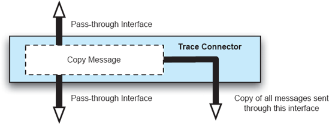
Figura 14-7. Um conector de traços.
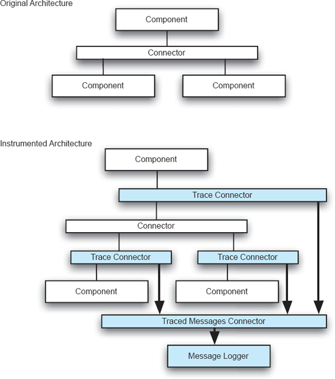
Figura 14-8. Arquitetura instrumentada e arquitetura original.
Por fim, dependendo do contexto de adaptação, a técnica usada para coletar as observações também pode precisar ser responsável por transmiti-las da plataforma onde a aplicação alvo está rodando para o host onde a análise de adaptação será realizada. Na medida em que o alvo é um sistema embarcado, essa transmissão externa provavelmente será necessária.
Técnicas para Análise dos Dados e Planejamento de Mudança
Analisando os Dados Analisar os dados coletados ao observar um sistema e, consequentemente, determinar as adaptações a serem realizadas é um problema aberto. A variedade de tipos de mudanças que podem ser necessárias impede a prescrição de um pequeno conjunto de técnicas padrão. De fato, o problema é essencialmente o mesmo que o entendimento de programas e a depuração de programas. Para algumas situações, uma técnica simples e canônica pode ser suficiente; Para a maioria das situações, será necessário muito pensamento humano.
Na medida em que tipos de mudanças possam ser previstas enquanto um sistema está sendo projetado, técnicas podem ser implementadas para monitorar situações específicas, desencadeando estratégias pré-planejadas para lidar com a mudança quando os monitores detectam os valores-chave. A análise de dados é simplesmente comparar um valor com uma referência. Considere o exemplo de um aplicativo de comércio eletrônico. À medida que o número de transações dos clientes aumenta, os servidores de back-end precisam realizar mais trabalho. À medida que um limite máximo é alcançado, servidores adicionais devem ser colocados online para evitar a degradação da experiência do usuário. Como grande parte do processamento de transações nessas aplicações de comércio eletrônico pode ser realizada por servidores independentes, um design simples de compartilhamento de carga pode ser usado, no qual servidores adicionais são ativados automaticamente, tornando-se parte da "fazenda de servidores" como resultado do monitoramento de um valor limite e do acionamento da resposta pré-planejada.
Um passo fácil a superar essa situação é usar um conjunto de regras para monitorar um conjunto de valores observados. A condição de defesa nas regras pode ser complexa; O mesmo pode ser possível para as ações correspondentes. Em essência, porém, a abordagem é a mesma: o design do sistema tem disposições explícitas para acomodar mudanças previstas, incluindo a abordagem específica para monitoramento e análise. Um uso dessa técnica pode ser comparar o comportamento observado de um sistema com o comportamento previsto por uma análise da arquitetura antes de sua implementação. Por exemplo, uma simulação pode mostrar que um sistema aborta corretamente uma transação se qualquer uma de suas subtransações falhar; mas o monitoramento da implementação pode mostrar que a transação foi (inadequadamente) concluída nesse caso, exigindo correção.
Além dessas abordagens simples, há poucas técnicas gerais focadas na análise de dados observacionais para orientar a adaptação. Um exemplo é ilustrativo, no entanto. O sistema MTAT tem como objetivo ajudar engenheiros a entender o comportamento de aplicações que possuem uma arquitetura baseada em eventos. (O sistema Rapide deCapítulo 6é semelhante.) Os conectores de traço mostrados emFigura 14-7Alimente cópias de todas as mensagens enviadas na arquitetura para um banco de dados relacional. Esse banco de dados pode então ser examinado de várias maneiras para determinar, por exemplo, padrões de comunicação nas cadeias de aplicação ou causalidade. Cadeias de causalidade são particularmente úteis: quando um engenheiro entende essa mensagemumde componenteUmCausa Mensagembpara ser enviado a partir do componenteBE assim por diante, mudanças podem ser feitas que reflitam uma compreensão profunda das inter-relações entre elementos da arquitetura de um sistema. Note que, em essência, essa abordagem é semelhante às técnicas empregadas na depuração do código-fonte; A diferença está em aplicar a abordagem analítica ao nível dos conceitos arquitetônicos e focar no tipo particular de comunicação usado no nível arquitetônico.
Analisando a arquitetura e propondo uma mudança. Assumindo que observações de um sistema tenham sido obtidas e analisadas, resta desenvolver uma modificação na arquitetura para atender às necessidades que o arquiteto está preocupado. Novamente, o desafio pode ser muito simples ou muito complexo.
Se a arquitetura foi originalmente projetada para acomodar certos tipos de mudança, e a análise dos dados mostra que a mudança necessária está dentro do escopo esperado, então propor uma mudança responsiva é simples. Por exemplo, se um componente for demonstrado como um gargalo de desempenho, e um componente substituto mais rápido com as mesmas interfaces pode ser produzido (ou seja, a mudança fica confinada aos "segredos" internos do componente), basta trocar o componente original pelo melhorado. Se a arquitetura de um sistema estiver no estilo cliente-servidor e um novo cliente for necessário, a modificação é simples. Se a arquitetura de um sistema for no estilo publicar-assinar e um novo editor estiver disponível, então novamente o caminho para a mudança é simples. O padrão aqui é claro: se a mudança necessária se encaixa no tipo de mudança prevista e acomodada pelo estilo arquitetônico da aplicação, então a abordagem a ser adotada é clara.
Se a análise mostrar que a mudança necessária não se encaixa em um padrão previsto, então o arquiteto deve recorrer às técnicas gerais de análise e design discutidas anteriormente emCapítulos 4e8.
Patches, Pacotes de Serviço, Upgrades e Lançamentos
Sistemas comerciais utilizam uma variedade de técnicas e terminologia para apoiar "atualizações" de produtos de software implantados. Os termos upgrades, releases, service packs, patches e outros são todos usados. Há pouco significado técnico consistente para esses termos. Patches eram inicialmente usados para se referir a pequenas alterações em um arquivo, mas alguns usaram o termo para o que equivale a uma substituição total do arquivo original. Patches podem ser aplicados tanto a arquivos binários quanto a arquivos textuais. O termo service pack geralmente é usado para designar um conjunto de mudanças em uma aplicação, mas também não há consistência nisso.
Os meios de implantação e instalação dos patches (qualquer que seja o termo usado) podem variar significativamente. Algumas implantações são iniciadas pelo próprio software implantado — ou seja, uma instância de um sistema verifica com o site de origem as atualizações disponíveis e, se encontradas, inicia um download. Em outras ocasiões, o fornecedor inicia a implantação, tentando notificar todos os sites de usuários sobre a necessidade da atualização. Uma vez implantado, o patch pode ser instalado automaticamente ou pode exigir envolvimento ativo do usuário.
A atividade de instalação pode ser simples ou envolver a verificação do contexto — determinando os outros componentes ou aplicações que são instalados que podem determinar a mudança específica a ser feita.
Todas essas atividades ecoam ou incorporam algumas das técnicas envolvidas em um processo robusto de adaptação baseado em arquitetura, como descrito neste capítulo.
Analisando a mudança proposta. Após o desenvolvimento de uma proposta de mudança em uma arquitetura, ela deve ser verificada para determinar se ela está completa e apropriada para implantação em suas plataformas-alvo. Checar uma mudança proposta parece tão óbvio que nem precisa ser dito, mas considere alguns dos possíveis itens que podem precisar ser verificados:
O número de questões que podem precisar ser verificadas é grande, e por isso geralmente é necessário um passo explícito para verificá-las.
Uma situação que exige atenção especial é quando cada sistema-alvo para o qual a arquitetura revisada será implantada pode ser único. Ou seja, devido à possibilidade de modificações locais, cada alvo precisa, essencialmente, ser verificado individualmente. Se o número de alvos for significativo, a análise terá que ser automatizada.
Técnicas para implantar descrições de mudanças e
modificar a arquitetura
Descrevendo Mudanças em uma Arquitetura Para efetuar um reparo em um sistema de software em execução, as mudanças no sistema que ocorrerão devido ao reparo devem ser especificadas e legíveis pela máquina. Existem três maneiras principais pelas quais mudanças arquitetônicas concretas podem ser expressas, conforme segue.
Aplicando Mudanças a uma Arquitetura Em qualquer um desses três casos, dois mundos estão envolvidos — o mundo da arquitetura e o mundo da implementação. Em geral, para que qualquer um desses artefatos de mudança seja eficaz na adaptação de um sistema real e implementado, deve haver uma correspondência estreita entre elementos no modelo arquitetônico e elementos na implementação. O uso de frameworks de implementação de arquitetura ou middleware flexível (vejaCapítulo 9) pode ser usado para facilitar isso.
Na ausência de ligações estritas entre arquitetura e implementação, é concebível empregar um humano como agente de mudança no sistema de destino. Ou seja, o artefato de mudança é revisado por uma pessoa, e essa pessoa é responsável por fazer as alterações correspondentes ao sistema. Certos sistemas de software [por exemplo, sistemas de planejamento de recursos empresariais (ERP)] são tão complexos de implantar, instalar e configurar que os clientes simplesmente não conseguem fazer isso sozinhos. Em geral, uma organização que compra esse tipo de software também contrata uma equipe de consultores ou especialistas em produtos para implantar, instalar e configurar o software para sua própria organização. Nesse caso, mudanças arquitetônicas podem ser implantadas do fornecedor para a equipe de consultoria, que então pode fazer as alterações de configuração no sistema manualmente.
Uma vez que as mudanças na arquitetura de um sistema são descritas concretamente em uma das formas acima, elas devem ser realmente aplicadas a esse sistema. No caso dos scripts de mudança, o script de mudança é executado em algum ambiente de execução co-localizado com a aplicação de destino. O software subjacente à aplicação de destino, geralmente o framework de implementação da arquitetura ou middleware, é chamado para realmente fazer as alterações no sistema. No caso dos diferenciais arquitetônicos, um agente de mudança rodando junto com a aplicação de destino deve interpretar o diferencial e fazer as alterações nele especificadas, um processo conhecido como fusão. No caso de novas especificações de arquitetura, um agente de mudança deve determinar a diferença entre a configuração atual e a pretendida da aplicação e fazer alterações conforme necessário.
Problemas com a implantação. Não importa qual tipo de artefato de mudança seja usado — scripts de mudança, diferenciais arquitetônicos ou novas especificações arquitetônicas — esse artefato precisa ser implantado no sistema alvo (ou em seu agente de mudança associado). As questões envolvidas na implantação desses artefatos de mudança são semelhantes às encontradas na implantação de software em geral, e por isso a maior parte dos conselhos emCapítulo 10O desdobramento também se aplica aqui. Se o sistema de destino estiver rodando em um único host remoto, a implantação geralmente é simples: o artefato de mudança pode ser enviado por qualquer número de protocolos de rede, como HTTP ou FTP, para o agente de mudança, que então executa as alterações. Sistemas distribuídos e descentralizados podem usar abordagens baseadas em push ou pull para distribuir artefatos de mudança.
Em qualquer uma dessas abordagens, um agente de mudança deve estar localizado na máquina de destino para realmente efetuar as mudanças na arquitetura — executar o script de mudança, analisar o diferencial arquitetônico, e assim por diante. Esse agente pode ser implantado com o sistema original ou pode ser enviado junto com o artefato de mudança. Por exemplo, um script de mudança poderia ser compilado em forma executável (como um "instalador" ou "patcher") e então enviado pela rede para o sistema de destino, onde é executado diretamente pelo sistema operacional. Isso é conveniente, pois evita o problema de ter que atualizar os agentes de mudança por conta própria. Essa estratégia envolve algum risco de segurança — executar executáveis arbitrários nas plataformas-alvo é uma forma fácil de espalhar software malicioso caso o código não seja confiável. Assinatura de código e outras estratégias podem ser usadas para mitigar esse risco.
Problemas com a aplicação de mudanças. Fazer mudanças arquitetônicas em tempo real (vejaSeção 14.3.3abaixo) é mais difícil. Todas as questões identificadas abaixo relacionadas a garantir que a aplicação esteja em estado de repaciência adequada para ser adaptada se aplicam a essas estratégias.
Fazer alterações em tempo real em um sistema distribuído é ainda mais difícil, pois a mudança deve primeiro ser implantada em todas as partes apropriadas de um sistema distribuído, e então o sistema como um todo deve ser colocado em estado de repouso para atualização. Isso envolve riscos adicionais, já que falhas na rede e no host durante o processo de atualização podem dificultar o sistema para um estado consistente.
Um exemplo: ArchStudio
O ambiente ArchStudio suporta adaptação baseada em arquitetura com uma combinação das técnicas listadas acima. Especificamente, utiliza uma estrutura de arquitetura-implementação para garantir um mapeamento entre arquitetura e implementação. Depois, diferenciais arquitetônicos são usados como descrições de mudança para evoluir um sistema em tempo de execução. O processo para evoluir um sistema ocorre em quatro etapas.
A etapa 1 do processo é mostrada emFigura 14-9. Uma descrição da arquitetura em xADL é fornecida a uma ferramenta no ArchStudio, o Gerenciador de Evolução da Arquitetura (AEM). O AEM lê o modelo e utiliza o Flexible C2 Framework, descrito emCapítulo 9, para instanciar o sistema. Os bindings de implementação no modelo xADL facilitam o mapeamento dos componentes arquitetônicos e conectores para os componentes Java.
A etapa 2 do processo é mostrada na Figura 10. Um novo modelo arquitetônico é criado no ambiente, possivelmente fazendo uma cópia e modificando o modelo antigo. Depois, o modelo antigo e o novo são fornecidos como entrada para outra ferramenta do ArchStudio, o Mecanismo de Diferenciação, "ArchDiff." A ArchDiff cria um terceiro documento, um diferencial arquitetônico, que descreve as diferenças entre os dois.
O passo 3 do processo é mostrado na Figura 11. Aqui, o novo modelo não é mais necessário. O modelo original, que ainda descreve o sistema de execução, e o diferencial são fornecidos como entrada para outra ferramenta do ArchStudio, o Merging Engine, "ArchMerge." O motor de fusão, atuando como agente de mudança, modifica o modelo original com as mudanças no diferencial.
A Etapa 4 do processo é mostrada na Figura 12. Aqui, o AEM percebe que mudanças foram feitas no modelo original (por meio de eventos emitidos pelo repositório de modelos dentro do ArchStudio). O AEM então faz as alterações correspondentes na arquitetura em execução, fazendo mais chamadas para o Flexible C2 Framework subjacente, instanciando novos elementos e alterando a aplicação conforme necessário. Embora apenas adições sejam mostradas nesses diagramas simples, o ArchStudio suporta adições, modificações e remoções de elementos.
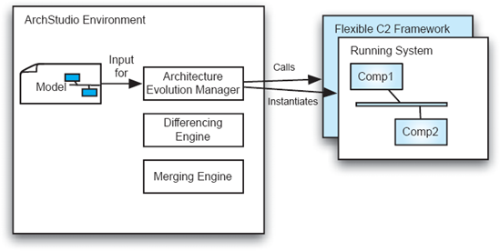
Figuras 14-9. Adaptação do ArchStudio passo 1: instanciação.
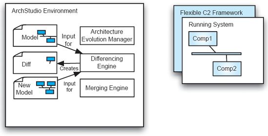
Figuras 14-10. Adaptação 2 da ArchStudio: diferenciação.
Arquiteturas/Estilos que Suportam a Adaptação
As seções anteriores focaram em técnicas genéricas que suportam partes do arcabouço conceitual para adaptação baseada em arquitetura apresentado emFiguras 14-6. A dificuldade de fazer mudanças — mesmo usando essas técnicas — varia enormemente de uma aplicação para outra, dependendo do tipo de mudança necessária e da natureza da arquitetura a ser alterada. A discussão sobre camadas de cisalhamento no início deste capítulo indicou, em termos genéricos, por que algumas mudanças são mais difíceis de ser implementadas do que outras. A discussão dos muitos estilos arquitetônicos emCapítulo 4mostrou em particular como alguns estilos são mais aptos a lidar com certos tipos de mudança do que outros. Arquiteturas cliente-servidor, por exemplo, são projetadas para acomodar facilmente a adição ou exclusão de clientes.
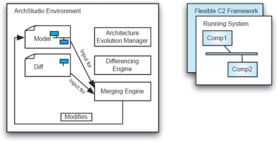
Figuras 14-11. Adaptação 3 da ArchStudio: fusão.
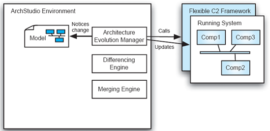
Figuras 14-12. Adaptação do ArchStudio passo 4: aplicar mudanças.
Nas subseções abaixo, revisitamos o tema dos estilos, introduzindo algumas abordagens arquitetônicas específicas focadas em interfaces para facilitar mudanças, e depois reconsideramos brevemente alguns conceitos deCapítulo 4que são particularmente eficazes em apoiar mudanças.
Soluções Arquitetônicas Focadas em Interface
Como os desenvolvedores têm sido encarregados de mudar softwares desde o surgimento da computação, não é surpresa que diversas técnicas tenham surgido para ajudar nesse processo. As técnicas apresentadas aqui refletem a aplicação do ditado "projetar para a mudança". Categorizamos essas técnicas como focadas em interfaces, pois se baseiam em interfaces de programação de aplicações ou interfaces de interpretação apresentadas pela aplicação original.
Essas técnicas não pretendem apoiar todos os tipos de mudança. De fato, o foco principal dessas técnicas é apenas adicionar funcionalidades na forma de um novo módulo.
Interfaces de Programação de Aplicações (APIs). APIs são talvez a técnica mais comum para permitir que desenvolvedores adaptem uma aplicação ao estendê-la. Com essa técnica, a aplicação expõe uma interface — um conjunto de funções, tipos e variáveis — para os desenvolvedores. Os desenvolvedores podem criar e vincular novos módulos que utilizam esses elementos de interface da forma que os desenvolvedores escolherem. (As inter-relações entre os novos módulos não são restritas pela API.) O tipo de alteração na aplicação original que pode ser suportada é limitado à funcionalidade que a API oferece. Muitos sistemas operacionais e pacotes comerciais usam APIs.
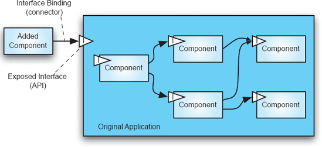
Figuras 14-13. Usando uma API para estender uma aplicação com um novo módulo.
Essa abordagem é ilustrada na Figura 14-13, que apresenta uma imagem nocional de uma aplicação à qual um novo componente foi adicionado. O componente adicionado pode utilizar qualquer um dos recursos da aplicação original expostos pela API, mas não pode acessar as interfaces de nenhum dos componentes internos da aplicação, nem modificar nenhuma das conexões internas da aplicação. O componente adicionado faz chamadas para a aplicação original; nada na aplicação original pode fazer chamadas para o componente adicionado.
Plug-ins. Plug-ins são uma espécie de imagem espelhada das APIs: em vez do componente adicionado chamar o aplicativo original, o aplicativo chama o componente adicionado. Para alcançar isso, o aplicativo original predefine uma interface que complementos ou plug-ins de terceiros devem implementar. O aplicativo utiliza e invoca a interface do plug-in, alterando assim seu próprio comportamento. Para iniciar o processo, a aplicação original deve estar ciente da existência dos plug-ins; Eles devem se registrar com a solicitação. Normalmente, o registro ocorre no início da aplicação, quando a aplicação inspeciona diretórios de arquivos pré-definidos. Componentes encontrados nesses diretórios que atendem à especificação de interface são registrados e podem então ser chamados. A técnica está ilustrada nas Figuras 14-14.
Adobe Acrobat e Adobe Photoshop são aplicativos que historicamente fizeram uso significativo do mecanismo de plug-in. Interações diretas entre múltiplos plug-ins são possíveis, mas tal interação não faz parte da arquitetura do plug-in propriamente dita.
"Arquiteturas de Componentes/Objetos". Com essa técnica, o aplicativo host expõe suas entidades internas e suas interfaces a desenvolvedores terceiros para que possam ser usadas durante o processo de adaptação. Isso contrasta, por exemplo, com as abordagens API e plug-ins que veem a aplicação original como uma entidade monolítica cuja estrutura interna é opaca e imutável. Aqui, os add-ons alteram o comportamento da aplicação hospedeira ao adicionar novos componentes que interagem com componentes existentes. Expor as entidades internas também permite que um componente seja substituído por um que expõe uma interface compatível. Essa abordagem é ilustrada nas Figuras 14-15.
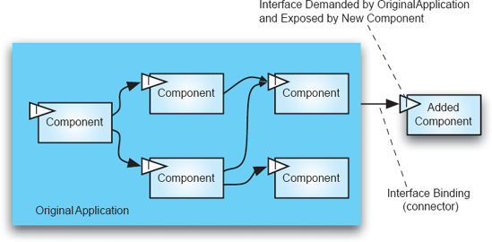
Figuras 14-14. Uso de uma interface plug-in para estender uma aplicação.
Essa abordagem de adaptação é mais poderosa do que APIs ou plug-ins, já que mais interfaces são expostas, e a abordagem parece centrada na arquitetura porque os itens-chave do vocabulário são os componentes do sistema. No entanto, normalmente ausente na aplicação comum dessa técnica está um modelo arquitetônico explícito. O desenvolvedor é (apenas) confrontado com o código-fonte do sistema; Nada em um nível mais alto de granularidade pode ser manipulado para alcançar as mudanças desejadas.
Sistemas baseados em CORBA, discutidos emCapítulo 4, são membros dessa categoria, assim como sistemas construídos com o Modelo de Objeto de Componente (COM) da Microsoft. Tais sistemas podem ser muito fluidos, mas a gestão deles pode ser difícil porque não existe um modelo explícito capaz de servir como a abstração fundamental.
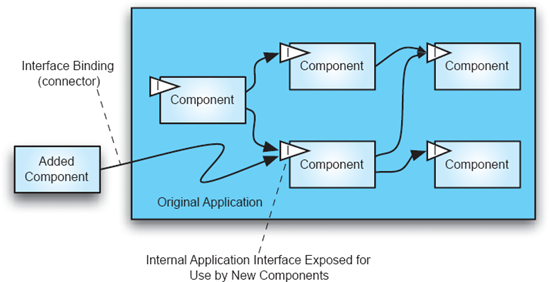
Figuras 14-15. Modificação de aplicações via abordagem de arquitetura componente/objeto.
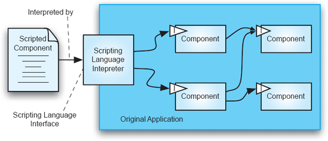
Figuras 14-16. Adaptação de aplicação por meio de uma linguagem de script.
Linguagens de script. Com essa abordagem, a aplicação fornece sua própria linguagem de programação (a "linguagem de scripting") e ambiente de execução que o arquiteto usa para implementar complementos. Em essência, isso é um uso do estilo intérprete deCapítulo 4. Add-ons, quando executados pelo interpretador, alteram o comportamento da aplicação. Linguagens de script geralmente fornecem construções específicas de domínio e funções embutidas que facilitam a implementação de complementos, especialmente para usuários que não têm conhecimento em programação. Linguagens de fórmulas de planilhas, sistemas macro e sistemas de programação por demonstração são essencialmente linguagens de script otimizadas para necessidades especializadas. O Microsoft Excel é um exemplo clássico de aplicação que oferece esse meio de extensão. A técnica é ilustrada emFiguras 14-16.
Interfaces de Eventos Com esta técnica — uma aplicação simples do estilo arquitetônico baseado em eventos deCapítulo 4—o aplicativo original expõe duas interfaces distintas para desenvolvedores terceiros. A primeira é uma interface de evento recebida, especifica as mensagens que pode receber e sobre as quais pode agir; a segunda, uma interface de eventos de saída, que especifica as mensagens que gera. As mensagens são trocadas por meio de um mecanismo de eventos. Os add-ons alteram o comportamento da aplicação enviando mensagens para ela ou agindo sobre as mensagens que recebem dela. Como discutido emCapítulo 5, os mecanismos de eventos geralmente fornecem uma funcionalidade de transmissão de mensagens, que envia uma mensagem para cada complemento anexado ao mecanismo de eventos. O mecanismo de eventos atua como um intermediário, encapsulando e localizando decisões de ligação e comunicação de programas. Como resultado, essas decisões podem ser alteradas independentemente da aplicação original ou dos componentes adicionais. Isso contrasta fortemente com as outras técnicas, nas quais programas referenciam diretamente, se vinculam e usam as interfaces uns dos outros. A técnica é ilustrada emFiguras 14-17.
(Forte) Abordagens Baseadas em Arquitetura
Se mudanças em um sistema forem necessárias que envolvam mais do que apenas adicionar um novo módulo, é necessária uma abordagem mais rica para a adaptação do que a que as soluções focadas em interfaces acima oferecem. O núcleo de qualquer solução baseada em arquitetura, como discutimos, é um modelo arquitetônico explícito, fiel à implementação, que pode servir de base para o raciocínio sobre mudanças.
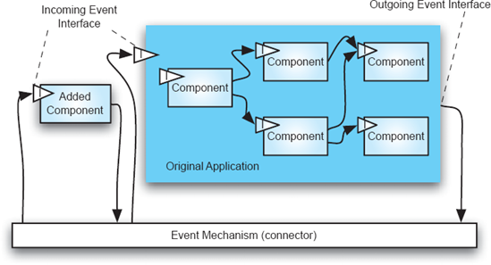
Figuras 14-17. Uma arquitetura de eventos usada para suportar extensão.
Simplesmente ter uma arquitetura explícita não é uma solução mágica, claro. Dependências complexas entre elementos arquitetônicos e conectores inflexíveis podem dificultar qualquer problema de adaptação. Uso consistente de qualquer um dos estilos arquitetônicos deCapítulo 4pode eliminar algumas das dificuldades inerentes. No entanto, estilos personalizados mal concebidos que combinam estilos mais simples de forma complexa podem anular esses benefícios.
A questão fundamental éLigações. Na medida em que um estilo arquitetônico permite a fácil fixação e descolamento de componentes uns dos outros, esse estilo facilita a adaptação. A ênfase consistente deste texto no uso de conectores decorre dos benefícios que conectores explícitos podem oferecer ao suportar tais anexos e descolamentos. A ampla gama de técnicas de conectores discutida emCapítulo 5No entanto, revela que nem todos os conectores apoiam igualmente a adaptação. Como uma chamada direta de procedimento é um tipo de conector, é obviamente possível que o interior de um componente esteja fortemente ligado (via um conector de chamada de procedimento) aos detalhes de uma interface fornecida por outro componente. No caso extremo (e, portanto, bastante inútil) de tratar a memória compartilhada como um conector, interdependências arbitrárias entre componentes podem ser alcançadas. Esses exemplos negativos servem para indicar o que faz um bom conector e o que faz um estilo apoiar a adaptação: independência entre componentes. No mínimo, isso significa falta de dependência das interfaces. (Como veremos mais adiante, porém, essa condição não é suficiente.) O uso de tipos específicos de conectores pode alcançar essa independência, sendo que uma das funções do conector é facilitar a comunicação entre dois componentes enquanto os isola da dependência.
Talvez o melhor exemplo desse tipo de conector e da independência fornecida seja o conector baseado em eventos discutido emCapítulo 4em conjunto com a invocação implícita dos estilos arquitetônicos. Os componentes enviam eventos para conectores que os encaminham para outros componentes. Os eventos são cápsulas de informação; o componente enviador pode não saber quais componentes recebem o evento enviado; Um componente receptor pode não compreender totalmente todas as informações do evento, mas ainda pode processá-las de modo que seus próprios objetivos sejam satisfeitos. Um protocolo de rede (como HTTP/1.1) pode ser usado, por exemplo, para suportar esse tipo de comunicação. O protocolo suporta a movimentação de dados encapsulados em MIME por toda uma aplicação distribuída; Como um componente receptor interpreta e processa a carga útil encapsulada é uma decisão local para esse componente. Garantir que a coleção de componentes e conectores coopere para alcançar os objetivos da aplicação é responsabilidade do arquiteto do sistema. Para exemplos detalhados desse tipo de arquitetura, vejaCapítulo 4, incluindo a discussão sobre o estilo C2.
Os Problemas Especiais da Adaptação Em Tempo Real e
Autônoma
Adaptar um sistema enquanto ele permanece em operação apresenta desafios especiais, complicando o processo de adaptação. Algumas situações exemplos em que essa complicação não pode ser evitada foram apresentadas no início do capítulo, e incluem aplicações cujo funcionamento contínuo é essencial para o sucesso de algum sistema maior, como softwares de controle em uma refinaria química em operação contínua.
Adaptação autônoma significa que o envolvimento humano no processo de adaptação está ausente, ou pelo menos muito minimizado. A adaptação autônoma pode ser uma adição complicadora à adaptação em tempo real, como quando o sistema operacional continuamente está isolado do controle externo, como na exploração planetária robótica. No entanto, tais circunstâncias extremas não são as únicas em que a adaptação autônoma pode ser necessária. Pode ser, por exemplo, que os requisitos de resposta rápida a falhas parciais do sistema ditem o uso de técnicas de adaptação autônomas.
Alguns dos desafios da adaptação improvisada podem ser vistos por analogias. Morar em uma casa que está passando por uma grande reforma às vezes é necessário e raramente agradável. O desconforto vem da tentativa de continuar a vida diária enquanto partes da arquitetura de serviço da qual dependemos — encanamento, eletricidade, aquecimento, segurança e assim por diante — estão apenas parcial ou intermitentemente disponíveis. A vida segue, mas não nos ritmos regulares ou com os confortos habituais.
Um exemplo mais vívido e instrutivo é a cirurgia. O paciente corresponde ao sistema sendo "adaptado". É claro que é essencial que, enquanto a adaptação está ocorrendo — o reparo de uma válvula cardíaca, por exemplo — o paciente seja mantido vivo. Os vários subsistemas do humano (devem) continuar funcionando mesmo com grandes interrupções. As diversas técnicas e tecnologias da cirurgia cardíaca, desde anestesia até bypass cardiopulmonar, são projetadas para manter o desempenho básico do sistema enquanto possibilitam uma grande reestruturação de um componente chave.
As principais questões adicionais na adaptação improvisada são as seguintes:
Um exemplo pode ajudar a esclarecer esses conceitos. (Ao longo desta seção, assumimos, em consonância com as partes anteriores deste capítulo, que a menor unidade de mudança é um componente e que a identidade e os limites dos componentes são mantidos na implementação.)
Considere o caso de um processador que controla a abertura e o fechamento de uma válvula em uma refinaria química com base em comandos, sensores de temperatura e medidores de fluxo. Tal processador pode ser projetado no padrão de sentido-computação-controle discutido emCapítulo 4. Pode ser necessário substituir um dos componentes de controle a bordo, devido à identificação de um erro em um de seus algoritmos. Uma estratégia plausível de adaptação é, em um momento arbitrário, cessar o processamento de quaisquer sinais recebidos em seus sensores, deixar a abertura da válvula na posição em que ela esteja, trocar o componente problemático, colocar o novo componente e então iniciar o componente substituído amostrando primeiro todos os sensores de entrada e depois emitindo novos comandos para a válvula. Se essa estratégia funcionará depende, por exemplo, se quaisquer entradas perdidas durante a troca foram críticas para a segurança da refinaria, ou se deixar a válvula aberta em sua última posição poderia colocar a refinaria em risco antes que o novo componente estivesse instalado. Por exemplo, se a válvula ficou na "posição totalmente ligada" durante a modernização, e se a modernização demorou muito para acontecer, alguma reação a jusante na refinaria pode ser colocada em risco. Uma estratégia melhor provavelmente envolveria bufferizar todas as entradas para o controlador da válvula para que, quando o novo componente entrasse em operação, ele garantisse que todos os valores recebidos fossem processados e, em vez de deixar a válvula na última configuração, colocá-la em uma posição segura.
A estratégia de serviço adequada para este exemplo provavelmente seria determinada em consulta com os engenheiros químicos da planta. O tempo que o processador de controle poderia estar ocupado com a adaptação poderia ser determinado pelas propriedades dos processos químicos na refinaria. Se a válvula for altamente crítica, pode ser necessário instalar um controlador temporário. O momento da adaptação poderia ser determinado pelas propriedades da planta, ou talvez pelo estado do próprio valor (talvez a adaptação ocorresse apenas quando a válvula está fechada).
Determinando as Condições para Efetuar uma Mudança
A determinação da condição precisa sob a qual é apropriado substituir um componente pode ser função tanto do sistema quanto da arquitetura. O sistema, como ilustrado no exemplo da refinaria, pode ditar que a mudança ocorra apenas sob certas condições externas. Alternativamente, a análise do domínio do sistema pode revelar que mudanças podem ocorrer a qualquer momento — mesmo que isso signifique que algumas saídas produzidas sejam errôneas — simplesmente porque o sistema é tão robusto que pode tolerar um grau significativo de erro por parte do software. Por exemplo, um satélite que coleta dados meteorológicos, os processa e envia as informações resultantes para o solo pode estar nessa categoria. Os dados meteorológicos são contínuos e são um fenômeno que muda lentamente (pelo menos em relação ao processamento computacional), então simplesmente perder parte dos dados de telemetria provavelmente não fará diferença.
Algumas aplicações, no entanto, exigirão uma análise muito mais conservadora. O princípio é que é seguro remover/substituir um componente apenas quando essa mudança não afetar negativamente o funcionamento do restante da aplicação. Embora identificar com precisão todas essas condições possa ser bastante difícil, é mais fácil especificar condição suficiente. Algumas condições de suficiência são capturadas na noção de quiescência. A intuição é que é seguro substituir um componente quando esse componente está inativo. Uma compreensão simples de quiescência é que o componente não está engajado em enviar ou receber informações, e internamente está ocioso (todos os seus threads estão ociosos). A inatividade, no entanto, precisa ser compreendida de forma mais abrangente, em termos de quaisquer transações das quais o componente possa ser parte. Ou seja, um componente C pode iniciar um conjunto de ações realizadas por outros componentes, permanecendo inativo até que os outros componentes completem sua tarefa e retornem o controle a C. Nesse caso, C não fica em pausa até que todas as ações que fazem parte de uma transação (conceitual) estejam completas. Vários tons de quietude são definidos na barra lateral, baseando-se no trabalho dos professores Jeff Kramer e Jeff Magee, que foram pioneiros nessa área.
Se uma aplicação é implementada com conectores poderosos e explícitos, como barramentos de mensagens, então determinar se um componente está engajado na comunicação é fácil — os conectores podem ser usados para fazer essa determinação. Saber se um componente está envolvido em uma transação multiparte, no entanto, requer uma análise mais profunda e terá que considerar as características comportamentais da arquitetura como um todo. Quanto mais forte for a noção de quiescência exigida, mais complexa será a determinação de quando ela é alcançada.
Quiescência, segundo Kramer e Magee
Um nó no estado ativo pode iniciar e responder a transações. O estado identificado como necessário para a reconfiguração é o estado passivo, no qual um nó deve responder a transações, mas ele não está atualmente envolvido em uma transação que iniciou, e não iniciará novas transações. Esse estado passivo é definido de modo a permitir que nós conectados progridam para um estado passivo ao completar transações pendentes. Além disso, contribui para a consistência do sistema ao concluir transações.
Para consistência durante a mudança, exigimos uma propriedade mais forte, que o nó não esteja dentro de uma transação e não receba nem inicie novas transações, ou seja, todas as transações pendentes estão concluídas e nenhuma nova será iniciada. A quiescência de mudança de um nó é definida como aquele estado em que o nó é passivo e não há transações pendentes às quais ele precise responder. Tal estado depende não apenas do próprio nó, mas dos nós conectados. De "Gerenciamento de Mudanças de Sistemas Distribuídos" (Kramer e Magee 1988) © 1988 ACM, Inc. Reimpresso com permissão.
Gestão do Estado
O estado de um componente é o conjunto de valores que ele mantém internamente. Quando um componente A é substituído por um componente B, surge a questão de qual estado B deve ser inicializado ao ser inicializado. A situação mais fácil é aquela em que não é necessária transferência ou recriação do estado correspondente. Por exemplo, muitos filtros Unix não mantêm estado; a saída que produzem é unicamente uma função da entrada mais recentemente lida, não afetada por qualquer cálculo anterior. Outras aplicações podem não ser assim projetadas. Por exemplo, o usuário pode ter definido várias preferências; Se o aplicativo for modificado enquanto o usuário está trabalhando com ele, as preferências devem ser transferidas. Uma estratégia eficaz para lidar com a transferência de estado é simplesmente externalizá-lo: copiar o estado que precisa ser movido para um terceiro; Quando o componente substituto entra em operação, sua primeira ação é se inicializar usando o terceiro componente. Essa estratégia, é claro, pressupõe que os componentes foram projetados para substituição — uma condição que nem sempre é verdadeira.
Dicas Práticas
Embora os princípios e questões discutidos acima se apliquem às arquiteturas em geral, existem algumas práticas e abordagens que definitivamente facilitam os problemas práticos de apoiar a adaptação em tempo real. Os principais são o uso de conectores explícitos, discretos e de primeira classe na implementação e uso de componentes sem estado. Para ver o sucesso desse conselho simples, considere a arquitetura da Web. Como descrito em outro lugar deste texto, a Web é baseada nesses princípios — e manifestamente a Web é uma aplicação que está continuamente em mudança. Proxies e caches podem ser adicionados e excluídos; novas tecnologias de servidor web implementadas, novos navegadores instalados. Tudo funciona porque as interações entre os vários componentes são mensagens discretas e o protocolo central (HTTP/1.1) exige que as interações sejam livres de contexto ("sem estado" no jargão da Web) — um servidor não precisa manter um histórico de interações com um cliente para saber como responder a uma nova solicitação.
Mudança Autônoma
Mudança autônoma é adaptação realizada sem controle externo. O caráter distintivo da mudança autônoma não é o desafio de trabalhar sem conexão, por exemplo, à Internet, mas sim de realizar o processo de mudança sem envolver os humanos. O desejo de evitar envolver humanos é facilmente motivado: um sistema autoadaptativo pode mudar muito mais rapidamente do que um envolvendo pessoas; consequentemente, a mudança autoadaptativa provavelmente será muito mais barata. Outras situações podem motivar mudanças autônomas de forma semelhante. Por exemplo, se um grande número de sistemas muito semelhantes precisar ser alterado, mas cada um com pequenas variações, uma abordagem autônoma pode funcionar não só mais rápido, mas com mais precisão, já que tais tarefas repetitivas muitas vezes são mal realizadas pelas pessoas — as tarefas são simplesmente entediantes demais para manter a atenção.
As dificuldades envolvidas em alcançar mudanças autônomas são igualmente claras: todas as atividades discutidas acima devem ser completamente realizadas como processos executáveis, desde a observação de dados, análise, planejamento, implantação e modificação do sistema em tempo de execução. Além disso, todos esses processos executáveis, e todas as informações envolvidas em sua execução, devem residir no sistema autônomo. O modelo arquitetônico do sistema é predominante nessa informação. Note que, com isso a bordo, e mantido fiel à implementação, o sistema continua se autodescrevendo.
Na prática, sistemas autoadaptativos hoje são limitados a situações bastante simplistas para as quais um conjunto de políticas de adaptação baseadas em regras pode ser formulado. Como já foi discutido, isso é apropriado para sistemas onde os tipos de necessidades de adaptação podem ser antecipados e codificados em termos simples. Expandir a gama de sistemas e tipos de mudança para os quais soluções autônomas podem ser desenvolvidas é uma área de pesquisa ativa.
"Computação Autonômica", o Grande Desafio da
IBM para a Indústria de TI
Segundo a IBM, "Computação autonômica é uma abordagem para sistemas de computação autogerenciados com o mínimo de interferência humana. O termo deriva do sistema nervoso autônomo do corpo, que controla funções-chave sem consciência ou envolvimento. A computação autônoma é uma área emergente de estudo e um Grande Desafio para toda a comunidade de I/T enfrentar de forma séria."
O manifesto inicial de computação autônoma (IBM 2001), conforme emitido pela IBM, focou atenção na instalação e gestão da infraestrutura de TI, como servidores corporativos e redes, e seu uso em processos de negócios. De acordo com este manifesto, existem pelo menos oito características-chave dos sistemas autônomos:
–IBM 2001
Claramente, a visão da IBM para computação autonômica é consistente com a abordagem baseada em arquitetura para adaptação articulada neste capítulo. De fato, a primeira característica listada acima é essencialmente uma reformulação da exigência de manter um modelo integrado da arquitetura de um sistema, conforme discutido no corpo principal do texto.
Referências: (IBM 2002; Kephart e Xadrez 2003); Conferência de Computação Autônoma www.autonomic-conference.org/.
ASSUNTO FINAL
Não há dúvida de que as aplicações serão adaptadas e alteradas ao longo de sua vida útil. A verdadeira questão é quão caro e difícil será efetuar essas mudanças. Embora "projetar para a mudança" e o uso de encapsulamento sejam princípios importantes para auxiliar na mudança, mecanismos muito mais poderosos e capazes são necessários para atender às necessidades contemporâneas de adaptação. Este capítulo apresentou esses mecanismos:
Se a arquitetura descritiva de um sistema e sua arquitetura prescritiva forem consistentes, então a adaptação pode ser orquestrada em torno de mudanças no modelo arquitetônico. Essa abordagem, além de fornecer as ferramentas intelectuais para gerenciar a adaptação comum, abre a porta para novos tipos de evolução de aplicações, como quando o modelo arquitetônico é implantado com a aplicação e os processos de adaptação na máquina de destino utilizam o modelo para determinar e realizar mudanças.
Este capítulo conclui uma sequência de três capítulos sobre o projeto de sistemas para propriedades não funcionais.Capítulo 12introduziu os conceitos principais e abordou uma variedade de NFPs.Capítulo 13aprofundou as NFPs de segurança e confiança; este capítulo examinou o PFN da adaptabilidade. O próximo capítulo retorna a um tema introduzido logo no primeiro capítulo do texto: famílias de programas. Com todos os diversos elementos do desenvolvimento baseado em arquitetura apresentados nos capítulos intermediários, exploramos em profundidade como o desenvolvimento econômico de um conjunto relacionado de aplicações pode ser alcançado.
O Caso de Negócios
Adaptação é o meio de preservar e aproveitar o investimento afundado em software. Não se adaptar é abandonar o investimento; O desafio é a adaptação econômica.
Uma abordagem baseada em arquitetura para adaptação oferece:
O conceito por trás da última entrada com tópicos acima é expor partes da arquitetura que permitem que terceiros adicionem valor por meio de suas extensões proprietárias, mas sem expor o interior dos componentes, ou mesmo permitir que terceiros tomem conhecimento da existência de grandes porções da arquitetura primária. Essa estratégia parece ser bem-sucedida, por exemplo, em aplicações comerciais de processamento de imagens.
Um risco de apoiar a adaptação é o abuso baseado na percepção de facilidade. Ou seja, se o marketing, por exemplo, for levado a acreditar que a organização pode apoiar efetivamente a evolução do produto com facilidade, então eles podem ser menos propensos a analisar cuidadosamente os pedidos de novos clientes ou a agrupar pedidos de mudanças em pacotes significativos.
PERGUNTAS DE REVISÃO
EXERCÍCIOS
LEITURA ADICIONAL
Como as mudanças acompanharam o desenvolvimento de software desde o início da área, não falta literatura discutindo como adaptar software. De fato, todo o problema do "Bug do Milênio"/Y2K foi um esforço massivo de adaptação de software. Nesse caso, claro, a mudança que estava sendo efetuada era extremamente restrita. Infelizmente, para alguns sistemas do Y2K, mudanças na arquitetura foram necessárias, já que a falha de dois dígitos fazia parte implicitamente do projeto desses sistemas.
O livro de Stewart Brand sobre mudanças em arquiteturas físicas (Brand 1994) vale muito a pena ser lido extensamente, pois contém inúmeras percepções sobre adaptação que têm correspondências na adaptação de software. Se nada mais, você vai descobrir por que ama alguns prédios e odeia outros.
Alguns dos primeiros trabalhos em abordagens arquitetônicas para adaptação foram realizados no Imperial College por Jeff Kramer e Jeff Magee como parte do Regis (Magee, Dulay e Kramer 1994; Ng, Kramer e Magee 1996) e projetos cônicos (Kramer e Magee 1990). Trabalhos sucessivos com Darwin continuam esse tema (Magee e Kramer 1996).
Peyman Oreizy e colegas são responsáveis por muitos dos principais insights apresentados neste capítulo, incluindo o modelo conceitual original para a gestão de sistemas autoadaptativos (Oreizy, Medvidović e Taylor 1998; Oreizy et al. 1999) e a caracterização dos estilos arquitetônicos que promovem a adaptabilidade apresentada na Seção 14.3.2. O primeiro desses dois artigos recebeu um prêmio em 2008, quando foi reconhecido como o artigo mais influente da Conferência Internacional de Engenharia de Software de 1998. Como parte do prêmio, os autores foram convidados a apresentar um novo artigo sobre o tema, analisando retrospectivamente o trabalho da última década em adaptação de software e propondo desafios para o trabalho ainda a ser feito (Oriezy, Medvidović e Taylor 2008). Trabalhos recentes adicionais incluem abordagens baseadas em sistemas baseados em conhecimento (Georgas e Taylor 2004; Georgas, van der Hoek e Taylor 2005). Gomaa explorou o uso de padrões para facilitar a reconfiguração em (Gomaa e Hussein 2004) e aborda a questão da quiescência.
Muitas outras referências estão disponíveis nos anais dos principais workshops da área, que incluem o Workshop sobre Engenharia de Software para Sistemas Adaptativos e Autogerenciados e o Workshop sobre Arquitetura de Sistemas Confiáveis.
[18] Estritamente falando, qualquer navegador que suporte JavaScript é dinamicamente adaptável. Sempre que o JavaScript é baixado de um site e executado no navegador, o usuário está aproveitando a extensibilidade dinâmica. A maioria dos navegadores contemporâneos é tão boa nisso que a experiência é completamente transparente para o usuário.
[19]Camadas, usadas por Brand e mostradas emFigura 14-1não correspondem exatamente às camadas usadas em software. Em particular, a justaposição relativa de camadas em um sistema de software, como encontrada no estilo em camadas deCapítulo 4, difere da ordem das camadas de cisalhamento. Como mostrado neste diagrama, por exemplo, a camada estrutural relativamente imutável é adjacente à pele relativamente mutável.